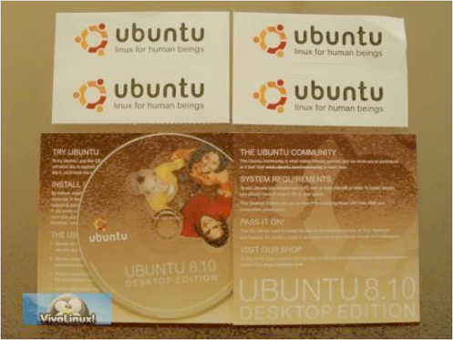

Debian acepta software bajo licencia AGPL
El proyecto Debian finalmente decidió que la Affero General Public License versión 3 (AGPL) es consistente con lo lineamientos de su distribución GNU/Linux y que el software licenciado bajo ella puede ser incorporado a su archivo principal.
La AGPL trata de cubrir un caso que la GPL no considera: muchos en la era de Internet usan un servidor y servicio web libres cuyo software no reside en sus computadoras. Pero de acuerdo a la GPL, los usuarios tienen derechos sobre el código fuente sólo cuando el software se está ejecutando en sus computadoras.
La AGPL agrega un aparatdo notable ("13. Remote Network Interaction; Use with the GNU General Public License") para atender la situación anterior.
Comienzan a llegar los CDs de Ubuntu 8.10 "Intrepid Ibex"

Y los usuarios de Ubuntu alrededor de todo el mundo ya están reportando el esperado arribo de sus CDs oficiales de la última versión 8.10 "Intrepid Ibex" de esa popular distribución. Como sabemos, esto es posible gracias a que Canonical Ltd. envía gratuitamente CDs de Ubuntu a quien lo solicite usando su servicio ShipIt... y tenga la paciencia de esperar hasta 10 semanas.
¿Uds. ya recibieron sus CDs de "Intrepid Ibex"?
Multi Theft Auto: San Andreas abierto como Open Source
Multi Theft Auto (MTA) es una modificación hecha por terceros del muy exitoso Grand Theft Auto: San Andreas que finalmente se ha liberado como Open Source después de más de 4 años de desarrollo cerrado. MTA agrega soporte para el modo multi-jugador en Grand Theft Auto: San Andreas 1.0 y es una de las pocas modificaciones que incorporan un elemento multi-jugador extendible sobre un juego propietario para un solo jugador.
El proyecto contó con la contribución de más de 16 desarrolladores de todo el mundo, que ahora podrán ser potencialmente muchos más, y está compuesto por 1.554 archivos y más de 550.000 líneas de código C y C++.
“El sistema operativo Linux que resultó de esta colaboración incluye código escrito por miles de programadores voluntarios alrededor de todo el mundo, unidos por el deseo de hacer de Linux un producto constantemente mejorado y una fuerza imparable en la computación.”
“Ha revolucionado la forma en la que el software se hace ha emergido como un modelo exitoso de colaboración distribuída.”
En el mundo de la alta tecnología, el ejemplo clásico de colaboración es Linux, el sistema operativo Open Source.
- Software
- 15:09
- 7 Comentario(s)
Nathive 0.811 ¿un nuevo GIMP?
Nathive es un nuevo editor de imágenes libre similar al GIMP, PhotoShop o Corel Photo-Paint, pero enfocado en la usabilidad y en ofrecer una suave curva de aprendizaje para todo el mundo. Nathive fué escrito desde cero en el lenguaje C y las librerías GTK+, por lo que se integra muy bien en un escritorio GNOME típico; además su filosofía de diseño es destacable:
- Mostrar respeto y gratitud a la comunidad de GIMP.
- Primero hacerlo fácil, luego hacerlo poderoso.
- El usuario no necesita ver todas las opciones todo el tiempo.
- Si parece absolutamente absurdo, podría funcionar.
Para continuar con su desarrollo el nuevo proyecto necesita la colaboración de programadores de C, traductores, artistas y desarrolladores web PHP y Python.
- Software
- 21/11/09
- 7 Comentario(s)
Decidido el separador de name spaces para PHP 5.3
Los muy anticipados Namespaces (espacios de nombre) previstos para aparecer por primera vez en PHP con su próxima versión 5.3 finalmente ya consiguieron un concenso para su implementación sintáctica. Así, ya está decidido que se usará el carácter \ (barra invertida) como separador, haciendo que escribir algo tan extraño como esto sea sintácticamente correcto:
class student {
public get address() = "SELECT * FROM Students WHERE id = $sid";
public set address($street, $number, $etc) = "INSERT ...";
// The display portions rely on get/set
public edit show_edit_form() default();
public edit show_inline_edit() default(ajax);
public view display_full_address() default();
}
Obviamente, la polémica ya está servida, y las críticas no son pocas.
Un parche para su implementación todavía está en desarrollo y todavía no está claro cómo afectará esta decisión el propio calendario de PHP 5.3.
Anteriormente en VivaLinux! :
Lo más leído esta semana
- MegaTux ejecuta Wine 1 millón de veces para simular la Internet
- Alan Cox abandona el mantenimiento del subsistema TTY del Kernel
- Video: Amarok 2.0 RC1
- Peter Drucker habla sobre Linux
- El modelo de negocios del Open Source está roto (?)
- ¿Despidos masivos en Mandriva?
- Kdenlive 0.7
- Songbird 1.0
Calendario
Subscríbete al Calendario Agrega tu Evento
Planeta Linux Shop
- Linux Debian Etch 4.0r4 + Manuales (3 Dvd) !!!!
- Curso De Linux+Manual Completo -Todo Para Aprender Linux-
- 6 Linux Para Tu Vieja Pc !!!!
- 1 Livedvd = 10 Linux Sin Instalar Ni Modificar Tu Disco Hd
- Linux Ubuntu 1.8 Ultimate 32
- Ubuntu 8.04 Lts Desktop Edition
- Opensolaris X86/X64 - Starter Kit (solaris) - 2 Dvds Ofical
Más en Planeta Linux Shop BRASIL